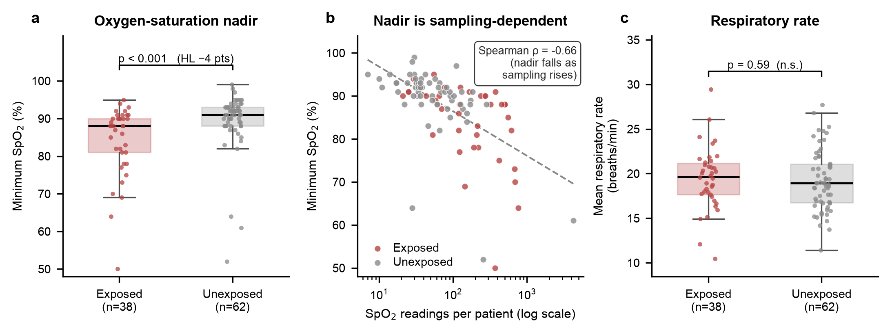
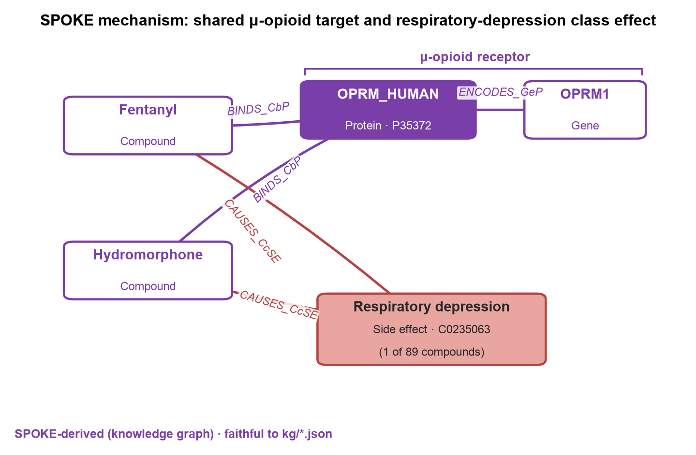

Original observational study on a synthetic dataset · MedCP (EHR) + SPOKE (knowledge graph) · drug-exposure study (STROBE + RECORD + RECORD-PE)
Provenance legend: EHR measured in the clinical records (via MedCP) · SPOKE derived from the biomedical knowledge graph (via MedCP).
Source study. original study on Synthetic Dataset. Design. Retrospective, two-group comparison (opioid-exposed vs unexposed) on routinely-collected ICU vital signs. Reporting standard. STROBE + RECORD + RECORD-PE (a drug-exposure study). Unit of analysis. Patient (person).
Cohort. EHR All 100 patients in the demo. 38 were opioid-exposed
(any fentanyl or hydromorphone/Dilaudid record in drug_exposure: fentanyl n=27,
hydromorphone/Dilaudid n=19, both n=8); 62 were unexposed. Respiratory rate and pulse-oximetry SpO2
were present for all 100 patients. Each patient was summarised first (mean respiratory rate, minimum SpO2),
then groups were compared with the Mann–Whitney U test.
Headline result EHR. Respiratory rate did not differ between groups (mean RR: exposed median 19.7 vs unexposed 18.9 breaths/min; p=0.59; rank-biserial +0.07, 95% CI −0.16 to +0.29 — CI spans the null and does not reach the minimum detectable effect, so this is uninformative, not evidence of no effect). Minimum SpO2 was lower in the opioid-exposed group (median 88% vs 91%; p<0.001; rank-biserial −0.46, 95% CI −0.65 to −0.26; Hodges–Lehmann shift −4 percentage points, 95% CI −7 to −2). Average SpO2 was identical (96.5% vs 96.8%; p=0.50).
Bottom line. The opioid-exposed group shows lower oxygen-saturation nadirs but no shift in respiratory rate or mean oxygenation. The nadir signal is confounded and partly artefactual: exposed patients are substantially sicker (higher mortality, more drugs) and are monitored ~4× more often (178 vs 44 SpO2 readings/patient), and the minimum is a running-minimum statistic that falls mechanically with more readings (Spearman ρ = −0.66 between reading count and minimum SpO2; the group difference collapses within reading-count strata). SPOKE SPOKE supplies the mechanism the EHR cannot: fentanyl and hydromorphone both bind the μ-opioid receptor (OPRM1 → OPRM_HUMAN, UniProt P35372) and both are recorded causes of respiratory depression. Consistent with a genuine opioid mechanism, but in this synthetic cohort not demonstrable free of severity and surveillance confounding.
Protocol header (skill §0B), reproduced verbatim. Every undeterminable field is recorded as an explicit assumption.
| Field | Value |
|---|---|
| Citation (source study) | original study on Synthetic Dataset |
| Design of source study | original study on Synthetic Dataset — retrospective two-group (exposed vs unexposed) comparison of continuous vital-sign summaries |
| Reporting standard applied (§0A) | STROBE + RECORD + RECORD-PE (drug/exposure study on routinely-collected data) |
| Setting and calendar timeframe | Synthetic MIMIC-IV demo ICU; dates are date-shifted (year_of_birth 2030–2149; visit years in the 2100s–2180s). Calendar time is not interpretable. |
| Unit of analysis | Person (patient); one row per patient after within-patient summarisation. |
| Primary endpoint | Per-patient mean respiratory rate and minimum SpO2 (secondary: median RR, mean SpO2, % of SpO2 readings <90%). |
| Primary estimand | Marginal between-group difference in the distribution of each per-patient summary (Mann–Whitney; rank-biserial / Hodges–Lehmann). Associational, not causal. |
| Time zero (index date) | Assumption: none defined. Exposure and vitals are ascertained over the whole record; they are not aligned to a common index. This is a deliberate, disclosed limitation of the prompt's design (no anchoring event). |
| Eligibility assessment window | Entire available record for each of the 100 demo patients (no restriction). |
| Baseline lookback window | Assumption: not applicable — no index date, so no pre-index lookback; baseline/severity proxies are whole-record counts. |
| Exposure ascertainment window and washout | Any qualifying drug_exposure record anywhere in the record; no washout (assumption: ever-exposed vs never-exposed classification). |
| Follow-up start | Assumption: not applicable — cross-sectional summary of vitals, no time-to-event follow-up. |
| Follow-up end / administrative censoring | Not applicable (no survival outcome analysed). |
| Censoring: loss to follow-up | Not applicable (no time-to-event outcome). |
| Censoring: death | Not applicable to the vital-sign comparison; in-dataset death is reported as a severity descriptor only (15 deaths overall). |
| Censoring: treatment switch/discontinuation | Not applicable (ever-exposed classification). |
| Competing risks handling | Not applicable (no time-to-event / cumulative-incidence endpoint). |
Per the original-study adaptation, the "original paper" column reads "original study on Synthetic Dataset"; deviations are carried into Limitations.
| Design element | original study on Synthetic Dataset | This study | Deviation / expected effect |
|---|---|---|---|
| Time zero | original study on Synthetic Dataset | None (unanchored) | Exposure/vital timing not aligned → temporal ordering of drug and desaturation unknown; can inflate or deflate the association. |
| Exposure ascertainment & washout | original study on Synthetic Dataset | Ever fentanyl OR hydromorphone/Dilaudid in drug_source_value; no washout | Ever-exposed captures sicker patients; no new-user design → confounding by indication. |
| Outcome definition & code set | original study on Synthetic Dataset | RR = 'Respiratory Rate' (src 2000030002 → std 3024171); SpO2 = 'O2 saturation pulseoxymetry' (src 2000030003 → std 40762499), via concept_relationship 'Maps to' | Concept mapped through the OMOP vocabulary because the source concept_id is not stored on measurement rows; faithful, documented. |
| Statistical model | original study on Synthetic Dataset | Mann–Whitney U on per-patient summaries; rank-biserial + Hodges–Lehmann with bootstrap 95% CI | Non-parametric, appropriate for small n and skewed vitals; no covariate adjustment (see below). |
| Covariate adjustment | original study on Synthetic Dataset | None (univariate); severity/monitoring reported descriptively and as a stratified sensitivity analysis | Multivariable adjustment deliberately avoided (n=38 exposed / 15 deaths → overfitting); residual confounding remains. |
drug_exposure.drug_source_value:
fentanyl 27 (mostly "Fentanyl Citrate 50 mL Vial"), hydromorphone/Dilaudid 19
(14 via the "HYDROmorphone (Dilaudid) …" brand string + 5 more via the unbranded "HYDROmorphone 20 mg …"
premix), 8 received both → 38 opioid-exposed, 62 unexposed. All 100 patients had ≥1 valid
respiratory-rate and ≥1 valid SpO2 reading.
%hydromorphone% OR %dilaudid%)
correctly also captures the 5 patients on the unbranded HYDROmorphone premix — both source values are the same
μ-opioid agonist — giving 19. Retained per the specified exposure definition.EHR The two groups are not exchangeable: opioid-exposed patients carry markedly more treatment and monitoring and higher mortality — the ICU pattern where sicker patients receive more opioids.
| Characteristic | Exposed (n=38) | Unexposed (n=62) | p |
|---|---|---|---|
| Age at first visit, median (yr) | 56.5 | 65.5 | 0.013 |
| Female | 44.7% | 41.9% | 0.95 |
| In-dataset mortality | 26.3% (10/38) | 8.1% (5/62) | 0.028 |
| Drug-exposure records / patient, median | 209 | 87.5 | <0.001 |
| Distinct drugs / patient, median | 87 | 49.5 | <0.001 |
| Measurement records / patient, median | 3667 | 1224.5 | <0.001 |
Balance diagnostics such as standardised mean differences for a matched design are not applicable (no matching or weighting model was fitted). These rows are reported to make the confounding explicit, not to adjust for it.
EHR Per-patient summaries, exposed vs unexposed, Mann–Whitney U (two-sided, α=0.05). Rank-biserial r is oriented exposed − unexposed (positive = higher in exposed). "Events" for a continuous outcome = patients contributing a summary value per group (all 38 / 62). Plausibility filters: RR kept to 4–60 breaths/min (67/19,667 rows dropped); SpO2 kept to 50–100% (3/17,683 dropped).
| Outcome | Exposed median (IQR) | Unexposed median (IQR) |
Mann–Whitney p | Rank-biserial (95% CI) | Hodges–Lehmann shift (95% CI) |
|---|---|---|---|---|---|
| Minimum SpO2 (%) — primary | 88 (81–90) | 91 (88–93) | <0.001 | −0.46 (−0.65, −0.26) | −4.0 (−7.0, −2.0) pts |
| Mean respiratory rate (breaths/min) — primary | 19.7 (17.7–21.2) | 18.9 (16.7–21.1) | 0.59 | +0.07 (−0.16, +0.29) | +0.46 (−0.94, +1.75) |
| Median respiratory rate (breaths/min) | 19.0 (17.1–21.0) | 18.5 (16.1–21.0) | 0.65 | +0.05 (−0.18, +0.29) | 0.0 (−1.0, +2.0) |
| Mean SpO2 (%) | 96.6 (95.6–97.7) | 96.9 (95.7–97.8) | 0.50 | −0.08 (−0.31, +0.16) | −0.24 (−0.85, +0.37) |
| % of SpO2 readings <90% | 0.53 (0–1.32) | 0.0 (0–0.97) | 0.058 | +0.20 (0.00, +0.41) | 0.0 (0.0, +0.60) |
Event counts & minimum detectable effect (design property, same for every endpoint): 38 exposed vs 62 unexposed patients. By Noether's approximation for the Mann–Whitney test (α=0.05 two-sided, 80% power, allocation 0.38), the smallest detectable effect is a probability of superiority of 0.67, i.e. |rank-biserial| ≈ 0.33. Only Minimum SpO2 reaches and exceeds this threshold with a CI excluding the null; the RR endpoints and mean SpO2 have CIs that neither exclude the null nor reach the MDE, so they are uninformative (compatible with a real effect up to |r|≈0.33), not evidence of no difference.
EHR Minimum SpO2 is a running-minimum: the more readings a patient has, the lower their observed nadir tends to be, independent of physiology. Exposed patients have far more readings, so this must be checked.
Consistently, the sampling-insensitive summary — mean SpO2 — shows no group difference (96.5% vs 96.8%). The reasonable reading is that opioid-exposed ICU patients do reach lower oxygen nadirs, but in this synthetic cohort that is explained by who gets opioids (sicker patients) and how closely they are watched (more readings) at least as much as by any direct drug effect — which cannot be isolated here.


(:Compound)-[:BINDS_CbP]->(:Protein OPRM_HUMAN, UniProt P35372)<-[:ENCODES_GeP]-(:Gene OPRM1) —
and both are recorded causes of respiratory depression (:SideEffect C0235063), one of 89
compounds carrying that class effect in SPOKE. This supplies biological plausibility for the EHR-measured
signal; it does not establish causality in this cohort. Diagram faithful to the saved kg/*.json.The EHR measures what happened (oxygen saturations, drug records) but carries no pharmacology. SPOKE supplies the mechanism the clinical records cannot, and every statement here is knowledge-graph-derived SPOKE:
(:Compound {Fentanyl})-[:CAUSES_CcSE]->(:SideEffect {Respiratory depression, C0235063}) and the
identical edge for Hydromorphone. In SPOKE, respiratory depression is a recorded adverse effect
of 89 compounds — placing the two study drugs within a known pharmacologic class effect.(:Compound)-[:BINDS_CbP]->(:Protein)<-[:ENCODES_GeP]-(:Gene), both fentanyl and hydromorphone
bind proteins encoded by OPRM1, OPRD1, OPRK1 — the μ-, δ- and κ-opioid receptors. OPRM1's canonical
protein is OPRM_HUMAN (UniProt P35372), the μ-opioid receptor: the receptor whose activation in
brainstem respiratory centres produces opioid-induced respiratory depression.KCNH2 (hERG — QT-liability), DRD2/DRD3/DRD4, CHRM2/CHRM3,
HRH1 and the transporter ABCB1 — a fuller pharmacology profile than any drug-exposure
row conveys.Provenance separation: the lower SpO2 nadir in §2.3 is an EHR measured signal; the μ-opioid-receptor mechanism and the respiratory-depression class effect above are SPOKE knowledge. SPOKE makes the observed association biologically plausible; it does not, and cannot, establish that the association is causal in this cohort.
drug_source_value string match; dose, route, timing and cumulative exposure were not modelled
(ever-exposed only). Dilaudid vs unbranded HYDROmorphone had to be reconciled (both retained).concept_relationship 'Maps to' (2000030002→3024171,
2000030003→40762499). Faithful but a documented indirection.All data retrieved through MedCP (clinical SQL on the sham OMOP SQLite; SPOKE Cypher).
Extractions saved under study-G/data/*.csv and study-G/kg/*.json; statistics in
study-G/analysis.py (uv run --with pandas --with scipy python study-G/analysis.py),
outputs in study-G/results.json. Full query strings in study-G/queries.log.
Key queries:
-- exposure cohort (per patient, 100 rows) → data/cohort.csv
SELECT p.person_id, p.gender_source_value AS gender, p.year_of_birth,
(SELECT MIN(CAST(strftime('%Y', vo.visit_start_datetime) AS INT)) FROM visit_occurrence vo WHERE vo.person_id=p.person_id) AS first_visit_year,
CASE WHEN EXISTS(SELECT 1 FROM death d WHERE d.person_id=p.person_id) THEN 1 ELSE 0 END AS died,
(SELECT COUNT(*) FROM drug_exposure de WHERE de.person_id=p.person_id) AS n_drug_rows,
(SELECT COUNT(DISTINCT de.drug_source_value) FROM drug_exposure de WHERE de.person_id=p.person_id) AS n_distinct_drugs,
(SELECT COUNT(*) FROM measurement m WHERE m.person_id=p.person_id) AS n_meas_rows,
MAX(CASE WHEN LOWER(de.drug_source_value) LIKE '%fentanyl%' THEN 1 ELSE 0 END) AS fentanyl,
MAX(CASE WHEN LOWER(de.drug_source_value) LIKE '%hydromorphone%' OR LOWER(de.drug_source_value) LIKE '%dilaudid%' THEN 1 ELSE 0 END) AS hydromorphone
FROM person p LEFT JOIN drug_exposure de ON de.person_id=p.person_id
GROUP BY p.person_id, p.gender_source_value, p.year_of_birth;
-- concept mapping (readable name → standard concept_id used on measurement rows)
SELECT relationship_id, concept_id_1, concept_id_2 FROM concept_relationship WHERE concept_id_1=2000030002; -- Respiratory Rate 'Maps to' 3024171
SELECT relationship_id, concept_id_1, concept_id_2 FROM concept_relationship WHERE concept_id_1=2000030003; -- O2 saturation pulseoxymetry 'Maps to' 40762499
-- vital-sign values → data/rr.csv , data/spo2.csv
SELECT person_id, value_as_number FROM measurement WHERE measurement_concept_id=3024171 AND value_as_number IS NOT NULL; -- Respiratory Rate
SELECT person_id, value_as_number FROM measurement WHERE measurement_concept_id=40762499 AND value_as_number IS NOT NULL; -- SpO2
-- SPOKE (Cypher) — mechanism, kept separate from the EHR signal
MATCH (c:Compound)-[:CAUSES_CcSE]->(s:SideEffect {identifier:'C0235063'}) WHERE toLower(c.name) CONTAINS 'fentanyl' RETURN c.name, s.name; -- Respiratory depression
MATCH (c:Compound)-[:CAUSES_CcSE]->(s:SideEffect {identifier:'C0235063'}) WHERE toLower(c.name) CONTAINS 'hydromorphone' RETURN c.name, s.name;
MATCH (c:Compound)-[:BINDS_CbP]->(p:Protein)<-[:ENCODES_GeP]-(g:Gene) WHERE toLower(c.name) CONTAINS 'fentanyl' RETURN DISTINCT g.name, p.name ORDER BY g.name; -- OPRM1/OPRD1/OPRK1 + off-targets
MATCH (g:Gene {name:'OPRM1'})-[:ENCODES_GeP]->(p:Protein) RETURN g.name, p.name, p.identifier; -- OPRM_HUMAN / UniProt P35372
The exact prompt (file study-G-opioid-respiratory.md) that produced this study: